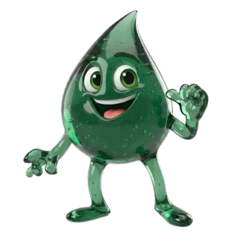

NIMBLE'S DISH DASH
Dash the counter, clean the dishes, dodge the mess!
SPACE
JUMP
Jump
— leap over hazards & grab high drops
SHIFT
SLIDE
Slide
— duck under rolling pins, ride the oil
F
SOAP
Fire soap
— clean dirty dishes, pop slimes
← →
◀ ▶
Brake
/
Boost
— bend your pace
⭐
Stars
restore a life — don't let them float by!
PREPARING THE KITCHEN…
PRESS ANY KEY TO START
Level:
1
Lives:
9
Score:
0
Distance:
0 m
Soap Ammo:
10
Surface:
0 / 24
GAME OVER
Score:
0
Distance:
0 m
Press
R
to run again
Tap to run again
SPACE
Jump |
SHIFT
Slide |
F
Fire Soap |
← →
Brake / Boost
🫧
Soap
▲
Up
▼
Down
⬇
Slide
🫧
Soap
⬆
Jump
⬆
Jump
📱
ROTATE YOUR DEVICE
Nimble's Dish Dash plays in landscape